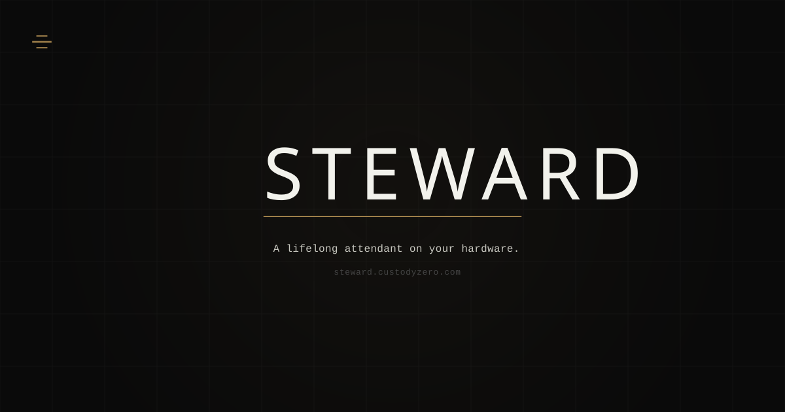

Steward is the pre-vetted fallback name for the CustodyZero local-inference personal intelligence product currently provisional-named Valet. Every design decision — accent, icon, motion, voice serif, register — is identical between the two. If the Valet trademark path fails, Steward ships with the full brand in place.
../../valet/guidelines/valet-brand-guide.html. Steward-specific asset paths and dimensions are recorded here.
Bebas Neue, letter-spacing 0.12em, 72 px canvas. STEWARD is seven letters — the visual weight grows with the word. Identical typographic construction to Valet.
The Binding — identical geometry to Valet. Three horizontal marks, thickened center. Same file on the file system, only the filename differs.
Identical motion specification to Valet. Sequential opacity illumination, top → center → bottom. 2.4 s thinking · 1.6 s busy. Only cycle duration changes between states.
Identical palette to Valet. Bronze B·04 anchor plus dim companion. WCAG UI-component 3:1 on every house background.
Identical three-font system to Valet. Bebas Neue display, Cardo voice, DM Mono chrome.
A steward holds a domain. He is present when needed, absent when not. The virtue is attention without theatrics — continuity of care that asks nothing in return but to be allowed to remain.
Discrete. Attentive. Enduring. Same register as Valet. The stewardship framing is implicit in the name; avoid leaning into resource-management language that pulls toward platform positioning.
Steward is an edge-resident personal intelligence. It runs on your silicon. It learns you over time, and acts through the tools you already use — not in place of them. Nothing leaves the device.
There is no cloud tenancy to audit, no metering to negotiate, and no session to end. The conversation continues as long as the device is yours. What the cloud calls personalization, Steward calls attendance.
Identical DO/DON'T rules to Valet. Full rules in GUIDELINES.md.
prefers-reduced-motion fallback.
Social Card
OG preview at 1200 × 630. Identical layout to Valet; wordmark text and URL differ.
